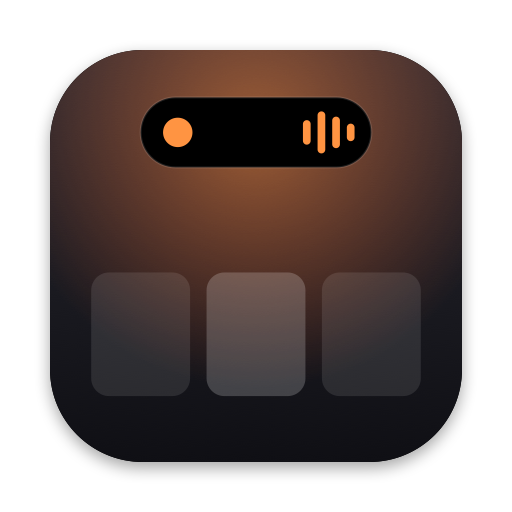

Privacy Policy
Effective 5 November 2026
The short version
BestNotch does not collect, transmit, sell or share any personal data. There are no accounts, analytics, advertising, tracking or crash reporting.
Data that stays on your Mac
The features below store information only in BestNotch’s private app container on your Mac. None of it is sent to the developer or to anyone else.
| Feature | What is stored | How to delete it |
|---|---|---|
| Clipboard history (off by default) | Text, links and images you copy while it’s on, up to your retention limits. Content marked concealed by password managers and apps you exclude are skipped. | Settings › Privacy › Erase Clipboard History, or turn the feature off |
| File Shelf | References (bookmarks) to files you drop on the Shelf, not copies | Remove items or clear the Shelf |
| Activity history | Recent activities such as finished timers and downloads, kept 7 days by default | Settings › Activities › Clear Activity History |
| Settings and profiles | Your preferences | Delete the app and its container |
Permissions
BestNotch asks for access only when you use the related feature: Calendars (read-only, to show upcoming events), Automation for Music and Spotify (to show artwork and control playback), and a folder you choose (to notice finished downloads). Calendar events are read on demand and are not stored or transmitted.
Network
The only network request BestNotch makes is downloading the album artwork image for the Spotify track you are playing, from the address Spotify provides. No information about you is added to that request.
Children
BestNotch is suitable for all ages and collects no data from anyone, including children.
Changes and contact
If this policy changes, the new version will be posted on this page with a new effective date. Questions: open an issue on GitHub.